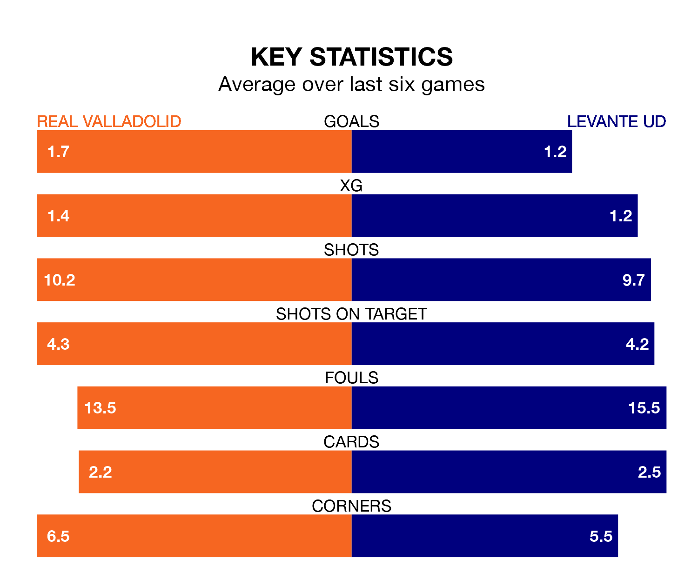

Real Valladolid host Levante UD on Saturday at the Estadio Municipal José Zorrilla in the Segunda División.
In their last league match, on Sunday, Valladolid beat SD Eibar 3-1 at home, with goals from Israel Salazar Piriz, Mamadou Sylla Diallo and Víctor Andrés Meseguer Cavas.
Levante also won, 3-2 at home against Elche CF, with Adrián De La Fuente, Daniel Gómez and Roger Brugué Ayguadé on the scoresheet.
In the last 10 years, Valladolid and Levante have played each other on 10 occasions. Valladolid won one of them, Levante six, and they drew three times.
On average, Valladolid scored 1.0 goal and Levante 2.1 in those matches.
Their last meeting was on December 2, when Levante won 2-1 at home.
With 39 goals in 32 games so far this season, Levante are scoring more than average in the league with 1.2 goals per game. But they are conceding more than average too, letting in 37 goals at a rate of 1.2 per game.
Valladolid are also above average scorers, with 1.2 goals per game, compared to a league average of 1.1. They have conceded 1.0 goal per game.
The hosts are fifth in the table after 32 games, of which they have won 15 and drawn six, earning 51 points.
The away side are six places behind Valladolid in 11th, with 11 wins and 14 draws putting them on 47 points.
With Andrés Fernández between the sticks, Levante can rely on one of the league's safest pair of hands. He has kept 12 clean sheets in his 24 appearances this season in the Segunda División.
In Valladolid's net, Jordi Masip has eight clean sheets in 21 games. He has conceded a goal every 118 minutes, only slightly more often than the 120 minutes between goals for Fernández Moreno.
The home team are in mixed form in the Segunda División, with three wins and a draw from their last six games.
With two wins and three draws over that period, Levante's form is slightly worse – they have taken nine points from 18, compared to Valladolid's 10.
Updated: 12:39 (UTC), 26/03/24